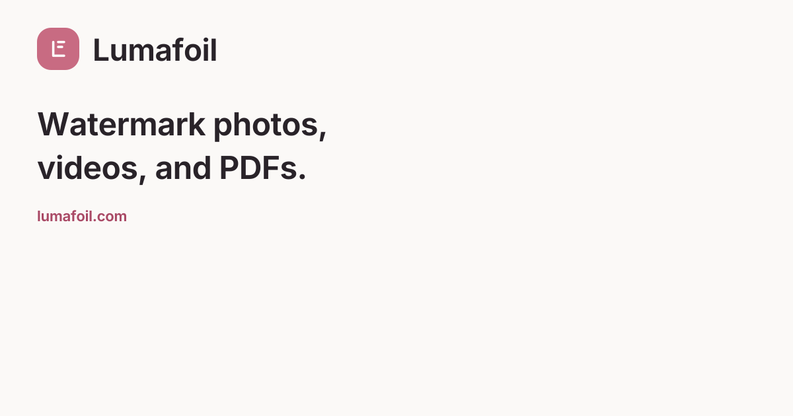

The Lumafoil identity.
Logos, color, typography, product imagery and ready-to-use provider copy for lumafoil.com. Use the same identity in the app, in email and wherever users connect their storage.
Download the brand kitLogo and wordmark
The rounded landing-page mark and Inter wordmark work together or separately. The SVG lettering is outlined, so the files remain portable without installing fonts.
{kind=link}
{kind=link}
{kind=link}
{kind=link}
- Keep clear space of at least one quarter of the symbol height.
- Use the icon at 20 px or larger, and a horizontal logo at 128 px or larger.
- Keep proportions, colors and spacing intact. Use the supplied single-color versions when full color is unsuitable.
Color
Rose identifies the brand. A deeper rose carries white button text. Neutral surfaces keep attention on the user's photos and controls.
#C86B82#A94965#292329#FBF9F7#FFFFFF#746973#191619White on action rose is approximately 5.49:1. White on the lighter brand rose is 3.57:1, so use action rose for ordinary button text. The application keeps a separate, tested dark-mode semantic palette.
Typography and voice
videos, and PDFs.
Inter Variable. Clear labels. Readable body text. A direct explanation of what happens to each file.
Interface
- Regular body text; medium or semibold controls.
- 14–16 px minimum body text, with generous line height.
- Keep decorative typefaces inside the creative watermark tools.
Writing
- Name the task: Open photo, Save preset, Export.
- Distinguish a local save from a completed cloud upload.
- State limits where they affect the user's choice.
- Use invite-only language. Avoid invented testimonials and unsupported superlatives.
Product and social images
Use real app views, with sample work clearly identified. Refresh screenshots when the interface changes.

{kind=link}
{kind=link}
Provider and email content
Watermark photos, videos, and PDFs with reusable presets.
Full descriptionLumafoil lets invited users add text, logos, signatures, and QR codes to their files. Processing runs on the user's device. Optional features import selected files from cloud storage, export finished files, save work to a workspace, and create sharing links.
Addresses
lumafoil.com
Privacy policy
· Terms
support@lumafoil.com
{kind=link}
{kind=link}
{kind=link}
{kind=link}
{kind=link}
Rights and source
The bundled Inter typeface is licensed under OFL-1.1; its license accompanies this kit. Product screenshots use generated sample photography and disposable local accounts. No customer work or endorsement is implied. Third-party creative assets retain their own recorded licenses.